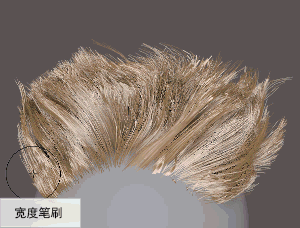
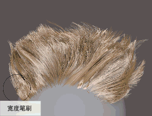

热键：在使用“长度”(Length)或“宽度”(Width)笔刷的同时按 Ctrl 键可减少头发长度或宽度。
- 操作(Operation)
- 特定于“长度”(Length)笔刷。用于在绘制长度效果（“缩放”(Scale)）或融合笔刷半径中头发的长度（“平滑”(Smooth)）之间进行切换。
热键：按 Shift 键可从“缩放”(Scale)切换到“平滑”(Smooth)。
- 选择模式(Selection Mode)
- 特定于“长度”(Length)笔刷。
热键：按 N 键在“浮动”(Floating)和“已锁定”(Locked)之间切换。
- 浮动(Floating)
- 在头发上拖动时持续应用长度效果。每个笔划是相加的并根据“增量”(Increment)值应用长度，直至达到最小值或最大值。“浮动”(Floating)是默认设置。
选择模式：浮动
- 已锁定(Locked)
- 隔离笔刷对笔刷半径中头发的效果。向左或向右拖动可缩短或加长当前选择中的头发。
选择模式：已锁定
- 笔刷模式(Brush Mode)
- 特定于“宽度”(Width)笔刷。
热键：按 N 键在“全局”(Global)和“局部”(Local)之间切换。
- 全局(Global)
- 沿每根选定头发的长度方向应用宽度缩放。笔刷衰减设置影响笔刷将宽度缩放应用于选定头发的方式。“全局”(Global)是默认设置。
笔刷模式：全局
- 局部(Local)
- 在笔刷半径内的头发 CV 之间应用宽度缩放。
笔刷模式：局部
- 增量(Increment)
-
控制每个笔划缩放头发长度或宽度的量。正值会增加头发长度或宽度，而负值会减少长度或宽度。按 Ctrl 键可在正负增量值之间切换。
对于“长度”(Length)笔刷，“增量”(Increment)在“选择模式”(Selection Mode)设置为“已锁定”(Locked)时处于禁用状态。
- 最小长度(Min Length)和最小宽度(Min Width)
-
用于设置头发长度和宽度的最小值。当头发达到此值时，笔刷笔划不再减少头发长度或宽度。
- 最大长度(Max Length) 最大宽度(Max Width)
-
用于设置头发长度和宽度的最大值。当头发达到此值时，笔刷笔划不再增加头发长度或宽度。
- 整体应用(Flood)
-
根据“增量”(Increment)值将长度或宽度应用于所有头发。多次单击“整体应用”(Flood)可增加或减少长度或宽度，直至达到最小值或最大值。
此外，您还可以使用“比例”(Scale)修改器节点全局调整头发长度（请参见 XGen 交互式修饰修改器属性），并使用“宽度比例”(Width Scale)属性全局调整头发宽度（请参见描述节点属性）。
对于“长度”(Length)笔刷，“整体应用”(Flood)在“选择模式”(Selection Mode)设置为“已锁定”(Locked)时处于禁用状态。
热键：Shift + 鼠标中键